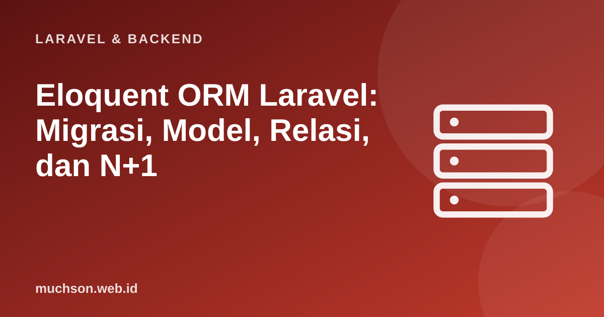

Beranda › Artikel › Laravel & Backend
Laravel & BackendEloquent ORM Laravel: Migrasi, Model, Relasi, dan N+1
Eloquent adalah ORM Laravel: setiap tabel punya model, dan setiap baris menjadi objek. Anda menulis kode PHP yang ekspresif alih-alih SQL mentah. Kemudahan itu menyimpan satu jebakan yang paling sering menyebabkan aplikasi Laravel lambat: masalah N+1 query. Memahaminya adalah pembeda antara aplikasi yang cepat dan yang merayap.
Sebaiknya sudah paham: dasar Laravel, SQL dasar

Setelah membaca dan mencoba materi ini, Anda mampu:
- membuat tabel dengan migrasi dan memahami manfaat migrasi
- membuat model dan menulis query dengan Eloquent
- mendefinisikan relasi satu-ke-banyak dan belongsTo
- mengenali masalah N+1 dan memperbaikinya dengan eager loading
- memahami mass assignment dan $fillable
Kode PHP/Laravel di artikel ini ditampilkan sebagai contoh yang mengikuti dokumentasi Laravel (versi 11 dan seterusnya, PHP 8.2 atau lebih baru). Bagian "cara kerja di balik layar" dijalankan sungguhan dengan Python atau JavaScript agar konsepnya dapat dibuktikan.
Migrasi: skema basis data sebagai kode
<?php
// php artisan make:model Produk -m (membuat model + migrasi)
// database/migrations/xxxx_create_produk_table.php
use Illuminate\Database\Migrations\Migration;
use Illuminate\Database\Schema\Blueprint;
use Illuminate\Support\Facades\Schema;
return new class extends Migration {
public function up(): void
{
Schema::create('produk', function (Blueprint $table) {
$table->id();
$table->foreignId('kategori_id')->constrained('kategori')->cascadeOnDelete();
$table->string('nama');
$table->text('deskripsi')->nullable();
$table->unsignedInteger('harga');
$table->unsignedInteger('stok')->default(0);
$table->timestamps(); // created_at dan updated_at
$table->index('nama'); // mempercepat pencarian
});
}
public function down(): void
{
Schema::dropIfExists('produk');
}
};Model dan query
<?php
namespace App\Models;
use Illuminate\Database\Eloquent\Model;
use Illuminate\Database\Eloquent\Relations\BelongsTo;
class Produk extends Model
{
protected $table = 'produk'; // nama tabel (Laravel menebak "produks" bila tidak diisi)
protected $fillable = ['kategori_id', 'nama', 'deskripsi', 'harga', 'stok']; // yang boleh diisi massal
public function kategori(): BelongsTo
{
return $this->belongsTo(Kategori::class);
}
}
// pemakaian
$semua = Produk::all();
$murah = Produk::where('harga', '<', 50000)->orderBy('harga')->get();
$satu = Produk::findOrFail(5); // 404 bila tidak ada
$baru = Produk::create(['nama' => 'Kopi', 'harga' => 65000, 'kategori_id' => 1, 'stok' => 10]);
$satu->update(['stok' => 8]);
$satu->delete();Mass assignment: Produk::create($request->all()) tanpa batasan memungkinkan penyerang menyisipkan kolom yang tidak Anda duga (misalnya is_admin). $fillable mendaftar kolom yang boleh diisi massal. Lebih aman lagi, gunakan $request->validated() yang hanya berisi kolom yang lolos validasi.
Relasi
| Relasi | Di model | Contoh |
|---|---|---|
| Satu-ke-banyak | hasMany / belongsTo | Kategori punya banyak Produk; Produk milik satu Kategori |
| Satu-ke-satu | hasOne / belongsTo | Pengguna punya satu Profil |
| Banyak-ke-banyak | belongsToMany (tabel pivot) | Produk punya banyak Tag; Tag punya banyak Produk |
| Polimorfik | morphMany / morphTo | Komentar milik Artikel atau Video |
<?php
class Kategori extends Model
{
public function produk(): HasMany
{
return $this->hasMany(Produk::class);
}
}
$kategori = Kategori::find(1);
foreach ($kategori->produk as $p) { // properti dinamis: menjalankan query saat pertama diakses
echo $p->nama;
}
$jumlah = $kategori->produk()->where('stok', '>', 0)->count(); // method: membangun query lebih lanjutMasalah N+1: diperagakan
Misalkan halaman menampilkan 100 produk beserta nama kategorinya. Bila kategori diambil satu per satu di dalam perulangan, Anda menjalankan 1 query untuk daftar produk ditambah 100 query untuk kategori: total 101. Berikut peragaan dengan SQL sungguhan (SQLite) yang menghitung jumlah query, setara dengan yang dilakukan Eloquent.
import sqlite3
db = sqlite3.connect(":memory:")
db.executescript("""
CREATE TABLE kategori (id INTEGER PRIMARY KEY, nama TEXT);
CREATE TABLE produk (id INTEGER PRIMARY KEY, kategori_id INTEGER, nama TEXT);
""")
db.executemany("INSERT INTO kategori VALUES (?, ?)", [(i, f"Kategori {i}") for i in range(1, 11)])
db.executemany("INSERT INTO produk VALUES (?, ?, ?)", [(i, (i % 10) + 1, f"Produk {i}") for i in range(1, 101)])
jumlah_query = 0
def q(sql, args=()):
global jumlah_query
jumlah_query += 1
return db.execute(sql, args).fetchall()
# --- N+1: Produk::all() lalu $p->kategori->nama di dalam foreach ---
jumlah_query = 0
produk = q("SELECT id, kategori_id, nama FROM produk")
for pid, kid, nama in produk:
kategori = q("SELECT nama FROM kategori WHERE id = ?", (kid,))[0][0] # satu query PER produk!
print("N+1 (lazy loading) :", jumlah_query, "query untuk", len(produk), "produk")
# --- Eager loading: Produk::with('kategori')->get() ---
jumlah_query = 0
produk = q("SELECT id, kategori_id, nama FROM produk")
ids = sorted({kid for _, kid, _ in produk})
kat = dict(q(f"SELECT id, nama FROM kategori WHERE id IN ({','.join('?' * len(ids))})", ids)) # satu query untuk semua kategori
for pid, kid, nama in produk:
kategori = kat[kid]
print("Eager loading :", jumlah_query, "query untuk", len(produk), "produk")N+1 (lazy loading) : 101 query untuk 100 produk
Eager loading : 2 query untuk 100 produk
<?php
// Lazy loading (N+1) - HINDARI di perulangan
$produk = Produk::all();
foreach ($produk as $p) {
echo $p->kategori->nama; // query baru untuk setiap produk
}
// Eager loading - 2 query saja
$produk = Produk::with('kategori')->get();
foreach ($produk as $p) {
echo $p->kategori->nama; // sudah dimuat, tidak ada query tambahan
}
// Mencegah N+1 secara otomatis saat pengembangan (di AppServiceProvider::boot):
// Model::preventLazyLoading(! app()->isProduction()); // melempar galat bila lazy loading terjadi
// Hanya jumlah relasi: withCount menghitung di SQL, bukan memuat semua baris
$kategori = Kategori::withCount('produk')->get(); // $k->produk_countPraktik query yang sehat
- Ambil hanya yang diperlukan:
select("id", "nama")dan paginasi (paginate()) alih-alihall()pada tabel besar. - Indeks pada kolom yang sering dipakai di where, order by, dan kunci asing.
- Pemrosesan besar:
chunk()ataulazy()agar tidak memuat jutaan baris ke memori. - Transaksi:
DB::transaction(fn () => ...)untuk beberapa perubahan yang harus berhasil atau gagal bersama. - Jangan menyisipkan input pengguna ke SQL mentah; gunakan binding parameter (query builder dan Eloquent sudah melakukannya).
1. Tulis query Eloquent untuk 20 produk termahal beserta kategorinya tanpa N+1.
Produk::with("kategori")->orderByDesc("harga")->limit(20)->get();2. Mengapa migrasi lebih baik daripada mengubah tabel manual di phpMyAdmin?
3. Kapan memakai withCount?
4. Bagaimana mendeteksi N+1 sejak dini?
- Migrasi menjaga skema basis data tetap terversi; model Eloquent memetakan tabel ke objek.
- Relasi: hasMany, belongsTo, belongsToMany, polimorfik.
- N+1: 1 + N query akibat lazy loading; atasi dengan with() (eager loading).
- Batasi mass assignment, gunakan indeks, paginasi, dan transaksi.
Tanya jawab
Apakah Eloquent lambat dibanding SQL mentah?
Apa itu soft delete?
Apa itu seeder dan factory?
Referensi
- Laravel: Eloquent ORM
- Laravel: Eloquent Relationships (termasuk eager loading)
- Laravel: Migrations
- Use The Index, Luke